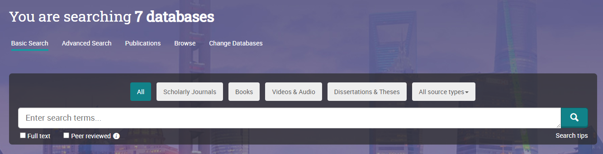
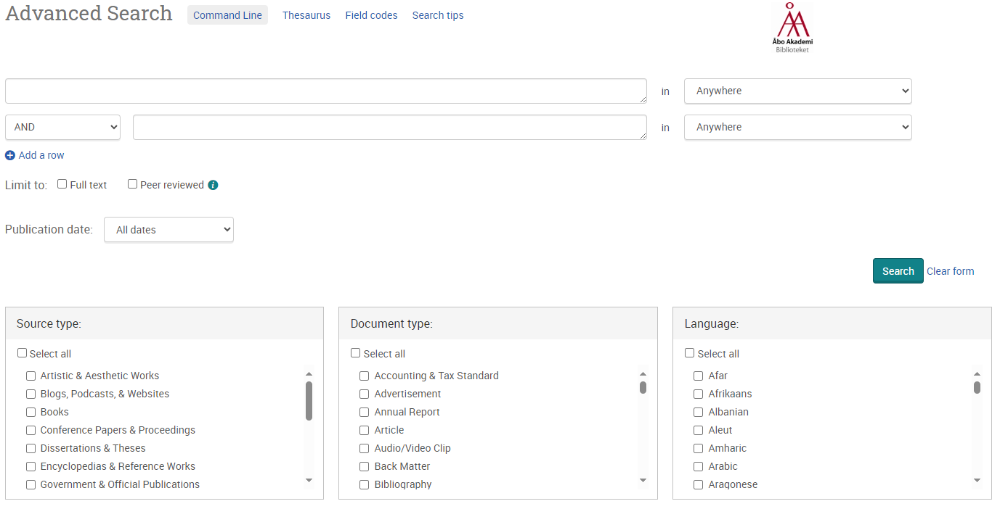
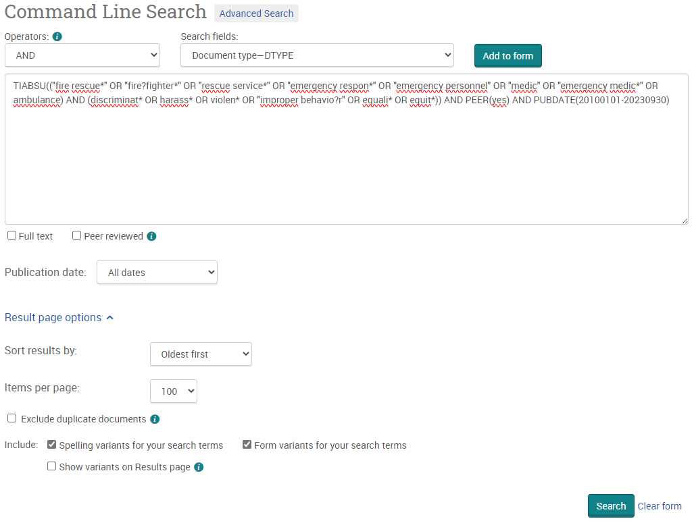
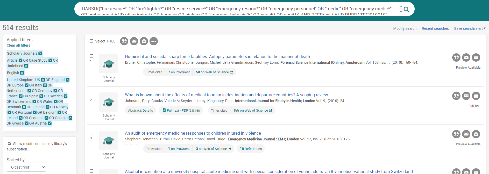
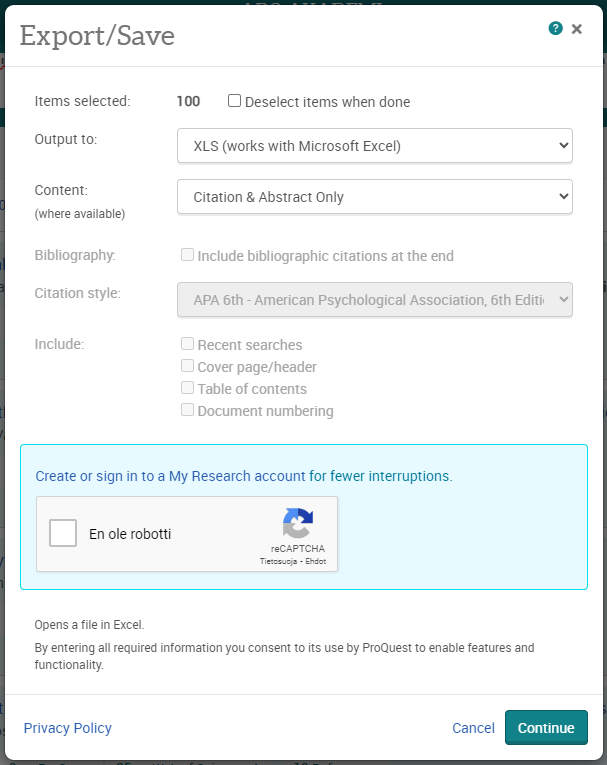

13 ProQuest
Osoite: https://www.proquest.com/
Sisältö: Yleinen tutkimuskirjallisuus
Saatavuus: Maksumuurin takana (Polamk:illa pääsy)
Aineistotyyppi: Vertaisarvioitu tutkimusraportti, harmaa kirjallisuus
Alusta: Itse kehitetty
Huomioita: ProQuestista haetaan vain vertaisarvioituja tutkimusraportteja. Nämä löytyvät seuraavista tietokannoista:
- Ebook Central (monitieteelliset tutkimuskirjat; monografiat ja artikkelikokoelmat)
- Social Science Premium Collection (yhteiskuntatieteelliset tutkimusjulkaisut)

Kirjautuessasi ProQuestiin näet ensimmäisenä perushaun (Kuva 13.1). Haun yläpalkista voit vaihtaa Advanced Search -hakuun, mikä toimii paremmin meidän hankkeen kannalta, sekä vaihtaa tietokannat Change Databases -napista.
Aloita vaihtamalla tietokannat. Hakumme kohdistuu Ebook Centraliin sekä Social Science Premium Collectioniin, eli muut tietokannat jätetään pois.
13.1 Hakulausekkeen muodostaminen
Advanced Search -alueella voidaan rakentaa hakulausekkeet kahdella eri tavalla: hakulaatikoissa tai yhtenäisenä hakulausekkeena Command Line -työkalun avulla (Kuva 13.2).

ProQuest noudattaa seuraavia hakusääntöjä:
Kaikki välimerkit ohitetaan, esim.
.,,ja:.Ns. “pysäytyssanat”, kuten artikkelit
a, the, antai välisanatwith, for, of, ohitetaan jos niitä ei erikseen merkitä haettavaksi.Diakriittiset merkinnät kuten umlautit
¨,´ohitetaan. Tätenåjaaovat samat symbolit, ja hakevat myös muita kutenátaiâ.Boolelaiset sanat
AND,ORjaNOTtoimivat kuten yleensä.Tulkintajärjestys boolelaisille merkeille on: ensin
AND, sittenOR, sittenNOT.Sekä fraasihaku että vaihtoehtoiset kirjoitusasut merkitään lainausmerkeillä
". Esimerkiksi"fire fighter"tai"color".- Vaihtoehtoisia kirjoitusasuja voi hakea myös lainausmerkkien ja aaltosulkujen yhdistelmällä
"``{}". Esimerkiksi"``{color behavior}"löytääcolour behavior,colour behaviour,color behaviourjacolor behavior.
- Vaihtoehtoisia kirjoitusasuja voi hakea myös lainausmerkkien ja aaltosulkujen yhdistelmällä
ProQuest tukee seuraavia villikortteja:
Kysymysmerkki
?: Korvaa nollan tai yhden merkin.Asteriski
*: Korvaa 0-5 merkkiä. Huomaa lyhyempi korvausmäärä kuin muissa hakukoneissa!
Hakua voi kohdentaa hakukentillä, kuten muissakin hakukoneissa. ProQuestissa voi asettaa useamman hakukentän samaan aikaan, esimerkiksi
ABSTRACT,TITLE(hakusana)hakee sekä tiivistelmästä että otsikosta. Huomaa pilkku ilman välilyöntiä hakukenttien välillä! Meille tärkeät hakukentät ovat:SUMMARY: Hakee tiivistelmistä, joko tieteellisistä formaaleista tai epäformaaleista tiivistelmistä.TITLE: Hakee otsikosta.NOFT: Hakee kaikkialta paitsi kokotekstistä.LOCATION: Hakee maantieteellisen alueen.PUBDATE: Hakee aikarajauksella. Rajauksen voi tehdä vuotena (YYYY), vuosi-kuukautena (YYYYMM) tai vuosi-kuukausi-päivänä (YYYYMMDD). Rajauksen voi tehdä haarukkana käyttämällä viivaa-:PUBDATE(20100101-20230930)hakee väliltä 1.1.2010-30.9.2023.PEER(yes): Hakee vain vertaisarvioituja julkaisuja.
Esimerkkinä olen suorittanut seuraavan haun:
TIABSU(("fire rescue*" OR "fire?fighter*" OR "rescue service*" OR "emergency respon*" OR "emergency personnel" OR "medic" OR "emergency medic*" OR ambulance) AND (discriminat* OR harass* OR violen* OR "improper behavio?r" OR equali* OR equit*)) AND PEER(yes) AND PUBDATE(20100101-20230930)
Asetin myös ProQuestin palauttamaan sata tulosta per sivu.

Hakusivulla voi jatkaa haun jalostamista. Tässä vaiheessa kannattaa heti laittaa täppä ruutuun “Show results outside my library’s subscription”, jotta kaikki tulokset (myös ne, joihin pääsy on vaikeampaa) tulevat mukaan. Koska tuloksia on tällä hetkellä hyvin paljon, asetan joitain lisärajoituksia sivupalkista käsin:
- Source type rajataan vain tieteellisiin julkaisuihin (
Scholarly Journals).
Document type rajataan seuraaviin:
Article,Case Study,Undefined(jos kirjaukset ovat menneet väärin)Language rajataan vain englantiin.
Location rajataan vain eurooppalaisiin maihin listauksen mukaan.
Kun teet rajauksia useasti, joskus ProQuest pelkää että olet robotti ja vaatii CAPCHA:n täyttämistä. Seuraa ohjeita ja ProQuest palauttaa sinut hakusivulle.
Lopputuloksina saan noin viisisataa tulosta, mikä kuulostaa jo järkevältä.

Muista tässä vaiheessa dokumentoida haku ja sen tuottamat tulokset!
Linkin hakuun voit saada yläpalkissa olevasta painikkeesta Save search/alert > Get search link. Huomaa, että linkki vanhenee vuoden jälkeen, eli kaikki dokumentaatio pitää saada tehtyä raporttia varten ennen tätä!
13.2 Tulosten lataaminen
ProQuestista voi hakea korkeintaan 100 tulosta kerralla. Joudut siis toistamaan prosessin useamman kerran, jos tuloksia on yli sata.
Aloita valitsemalla kaikki tulokset sivulla hakutulosten yläpalkin täpästä. Paina sitten kolmen pisteen kuvaketta (All save & export options) saadaksesi enemmän, ja valitse vaihtoehdoista Microsoft Excel Format (XLS).
Content-kohtaan, aseta “Citation & Abstract Only” (koska muita tietoa ei tarvita tässä vaiheessa). Voit myös laittaa täpän kohtaan “Deselect all items when done”; tämä auttaa seuraavien hakujen tallentamisessa. Kaikki muut asetukset voivat pysyä sellaisinaan.
Vastaa mahdolliseen CAPTCHA-pyyntöön ja paina sitten Continue.

ProQuest avaa uuden välilehden ja prosessoi hetken pyyntöä. Lopuksi koneellesi latautuu tulokset Excel-tiedostossa.
Voit tässä vaiheessa tehdä prosessin niin monta kertaa, kuin sinulla on tuloksia ladattavana.
Kun olet ladannut kaikki tulokset, voit sulkea ProQuestin ja siirtyä muotoilemaan tulokset sopivaan muotoon tulos-Exceliisi.
Tämäkin vaihe tulee toistaa jokaiselle ladatulle Excel-tiedostolle erikseen!
Avaa tulostiedosto.
Poista kaikki sarakkeet paitsi: Title, digitalObjectIdentifier, year
Varmista, että sarakkeet ovat samassa järjestyksessä kuin tulos-Excelissäsi.
Voit nyt valita kaikki tulokset (vie osoitin soluun A1 ja paina Ctrl + oikea valitaksesi seuraavat sarakkeet, ja sitten Ctrl + alas valitaksesi kaikki rivit) ja kopioida ne suoraan tulostaulukkoosi.
ProQuest tallentaa vuosiluvun tekstinä. Jos haluat muuttaa sen luvuksi, voit joutua tekemään muunnoksen jokaiselle solulle Excelissä erikseen. Helpoin tapa tehdä tämä on valita kaikki “virheelliset” solut (Excel näyttää pienen vihreän kulman sen mielestä virheellisellä solulla) ja navigoida kohtaan Kaavat > Kaavan tarkistaminen > Virheentarkistus. Jokaisen virheen kohdalla voit painaa Enter, jolloin Excel automaattisesti muuntaa tekstin luvuksi. Voit nyt hakata Enter-nappia yhtä monta sataa kertaa, kuin sinulla on rivejä…